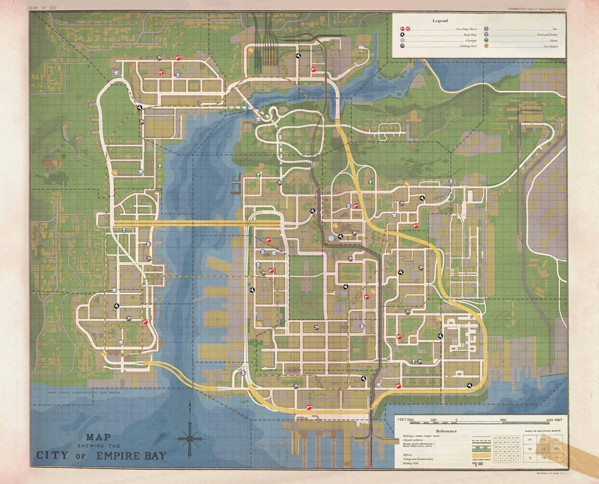
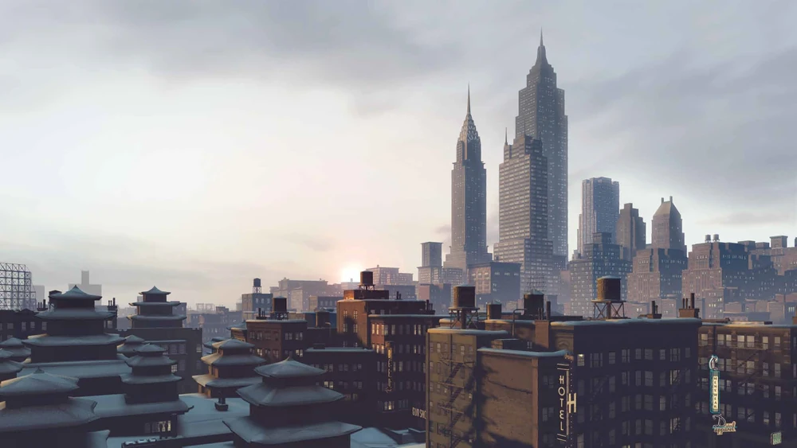

Districts
- Downtown — Financial core, nightclubs and high-rises.
- Harbor — Docks, warehouses and smuggling routes.
- Old Town — Narrow streets, family businesses and secrets.
Empire Bay — a sprawling coastal metropolis of docks, neighborhoods and hidden alleys. Explore the city’s districts, landmarks and secret routes.
Explore Empire Bay's districts, collectibles and activities — quick reference for explorers and completionists.
Tip: Many collectibles are tucked into side alleys and rooftop areas — keep an eye out while exploring.
